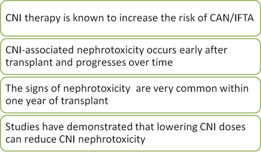
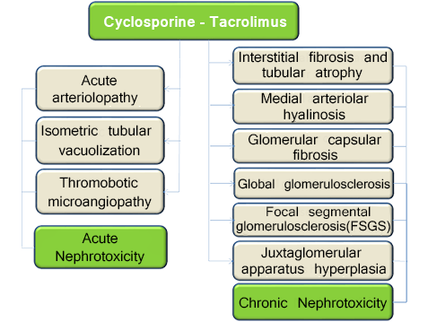
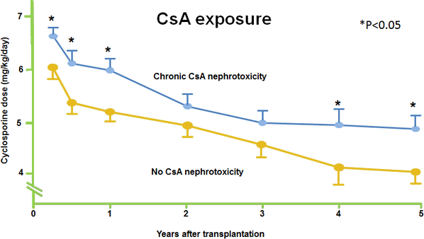
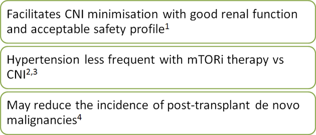
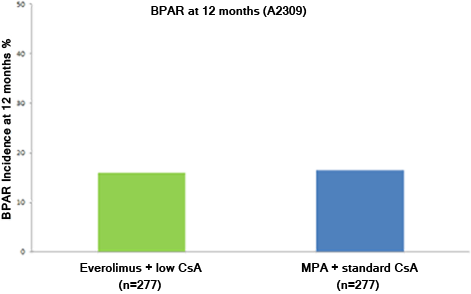
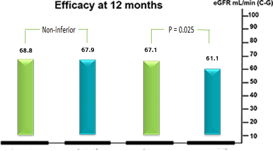
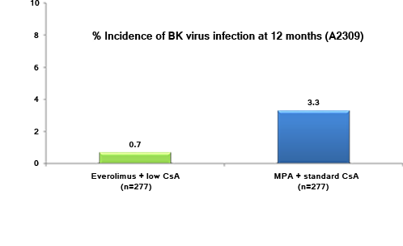
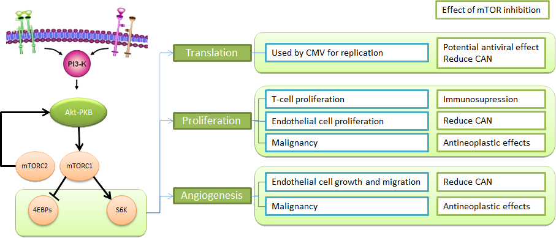

Selecting Patients & Addressing Safety and Efficacy in the de novo context in KT
Professor Samir Mallat
Associate Professor of Clinical Medicine
Director, End-Stage Renal Disease Program
American University of Beirut Medical Center
Objectives
- Examine the evidence of calcineurin inhibitor (CNI) toxicity
- Understand the role of everolimus in KT
- Define the characteristics of a patient suitable for treatment with everolimus


Presentation:
- A 54 year old male is referred for evaluation of increased serum creatinine
History:
- Hypertension, diagnosed 10 years ago
- Hyperlipidemia, diagnosed 5 years ago
- Crohn's disease, diagnosed in the 1990's
- Developed recurrent stone disease in the early 2000's
- Serum creatinine was 1.9 mg% in 1996 and 2.4 mg% in 2003
- A kidney biopsy revealed Ig A Nephropathy
- Acute renal failure secondary to obstructive stone disease with a serum creatinine of 12.4 mg% in 2005
- Renal function moderately improved after obstruction correction
- Hemodialysis from 2007, complicated by several episodes of sepsis
Other relevant history:
- Family/ Occupational/ Social History:
- Father with hypertension; died age 70 years due to myocardial infarction
- Mother with history of type 2 diabetes for 15 years; 72 years
- Married, with 2 children
- Never smoked or consumed alcohol
- Construction site supervisor
-
Current Medications:
- Lisinopril 20 mg QD
- Fluvastatin 20 mg QD
Examination:
- Overweight
- Height: 5’ 7"
- Weight: 80 kg
- BMI: 28.0
- Waist circumference: 38"
- Blood pressure: 130/80 mm Hg
- Cardiac exam: normal
- Peripheral pulses: normal
- No organomegaly
Laboratory findings:
- FSG: 100 mg/dL [75-100 mg/dL]
- Creatinine: 7.9 mg/dL
- Blood Urea Nitrogen: 75 mg/dL
- eGFR: 12 mL/min/1.73 m2
- ALT: 62 U/L
- Uric acid: 8.8 mg/dL
- HbA1C: 5.5%
- UA: 1+protein
- TSH: normal
- Resting ECG: left axis deviation, otherwise normal
- Lipid panel
- TC: 191 mg/dL
- TG: 280 mg/dL
- HDL-C: 36 mg/dL
- LDL-C: 99 mg/dL
FSG, fasting serum glucose; BUN, blood urea nitrogen; eGFR, estimated glomerular filtration rate; ALT, Alanine transaminase; HbA1C, glycosylated hemoglobin; UA, urinalysis; TSH, thyroid stimulating hormone; ECG, electrocardiography; TC, total cholesterol; TG, triglycerides; HDL-C, high density lipoprotein cholesterol; LDL-C, low density lipoprotein cholesterol; PRA, panel reactive antibody
Patient selection for KT:
- Kidney transplantation is the preferred treatment option for patients who have or are developing end-stage renal disease and who are, or will be undergoing, chronic dialysis therapy
- To qualify for KT a patient should have:
- Progressive, irreversible renal disease
- No active malignancy or infection
- Absence of systemic disease which would severely limit rehabilitation
- Life expectancy greater than 5 years with a successful transplant
- Effective family or social support systems
- Willingness to comply with treatment and follow-up requirements
Clinical Guidelines for Kidney Transplantation. http://www.bcrenalagency.ca/
Post-transplant management:
- Patient underwent living donor (brother) renal transplant
- Graft function was immediate
- Initial immunosuppression after transplant consisted of
- Cyclosporine (CsA), initiated at 8 mg/kg/day to achieve trough blood levels of 250-350 ng/ml
- Prednisone 0.5 mg/kg/day tapered to 10 mg/d
- Mycophenolate mofetil 500 mg twice daily
- Basiliximab induction
- Serum creatinine was stable at 1.2 mg/dL on discharge
Worsening renal function:
Four months after the transplant, the patient had
- Deterioration in his renal functions
- Increase in blood pressure
- Hyperlipidemia
Laboratory findings:
- Serum creatinine increased to 2.7 mg/dL
- Blood pressure 140/88 mm Hg
- Lipid panel:
- TC: 235 mg/dL
- TG: 360 mg/dL
- HDL-C: 40 mg/dL
- LDL-C: 123 mg/dL
- Renal biopsy revealed no cellular rejection but mild tubular atrophy and patchy mild interstitial fibrosis
What could be the most significant factor contributing or causing this renal pathology?
CNI therapy and nephrotoxicity:
Campistol JM, et al. Transplantation. 2011 Aug 15;92(3 Suppl):S3 26
CNI therapy causes acute and chronic nephrotoxicity:
Naesens M, et al. Clin J Am Soc Nephrol 4: 481–508, 2009
High cyclosporine exposure is associated with CAN:

CAN, chronic allograft nephropathy; CsA, cyclosporine.
Nankivell BJ, et al. Transplantation. 2004;78(4):557–65
Which is the preferred therapeutic option to prevent calcineurin inhibitor nephrotoxicity?
Therapeutic options to prevent or treat calcineurin inhibitor nephrotoxicity:
| Option | Rationale | Effect | Comment |
|---|---|---|---|
| CNI avoidance | Completely avoid exposure to CNIs | +/- | Increased rejection risk, maybe not with costimulatory blockers(e.g., belatacept) |
| CNI withdrawal | Exposure to CNIs for only a limited time, to bridge the high rejection risk period early after transplantation | +/- | Increased rejection risk |
| CNI minimization | Lower but continuous exposure to CNIs | + | Safe on short term; long term results not known |
Naesens M, et al. Clin J Am Soc Nephrol 4: 481–508, 2009
CNI minimization is associated with reduced overall graft failure and death-censored graft failure:
CNI minimization when compared to standard CNI was associated with
- Reduced overall graft failure (OR 0.73, P=0.009)
- Reduced death-censored graft failure (OR 0.73, P=0.03)
- No difference in graft failure secondary to rejection (OR 0.67 [95% CI, 0.34 - 1.31],P=0.24)
CNI, calcineurin inhibitor; CI, confidence interval; df, degrees of freedom; OR, odds ratio.
Sharif A, et al. J Am Soc Nephrol. 2011;22:2107–2118.
Management:
- Cyclosporine dose was reduced
- Mycophenolic mofetil 1000 mg BD
- After dose reduction, serum creatinine levels were stable between 1.8-2.0 mg/dL
- Hypertension was managed with valsartan 160 mg QD
- Hyperlipidemia was managed by increasing the dose of fluvastatin to 40 mg QD
Post-transplant skin changes:

Werschler WP. J Clin Aesthet Dermatol. Jul 2008; 1(2): 22–27
- 6 months post transplantation patient visited a dermatologist with complaints of rough, reddish, scaly, red bumps on the sunexposed areas of his body.
Laboratory examination:
Werschler WP. J Clin Aesthet Dermatol. Jul 2008; 1(2): 22–27
- Biopsy revealed actinic keratosis
Laboratory findings:
- FSG: 100 mg/dL
- HbA1C: 6.5%
- Creatinine: 1.8 mg/dL
- Blood Urea Nitrogen: 25 mg/dL
- eGFR: 35 mL/min/1.73 m2
- Uric acid: 8.8 mg/dL
- Total urine protein: 300 mg/d
- Lipid panel
- TC: 153 mg/dL
- TG: 220 mg/dL
- HDL-C: 31 mg/dL
- LDL-C: 80 mg/dL
FSG, fasting serum glucose; BUN, blood urea nitrogen; eGFR, estimated glomerular filtration rate; ALT, Alanine transaminase; HbA1C, glycosylated hemoglobin; UA, urinalysis; TSH, thyroid stimulating hormone; ECG, electrocardiography; TC, total cholesterol; TG, triglycerides; HDL-C, high density lipoprotein cholesterol; LDL-C, low density lipoprotein cholesterol; PRA, panel reactive antibody
What could be the risk factor/s for development of actinic keratosis in this patient?
CNI therapy is associated with increased risk of skin cancer:
| Calcineurin inhibitor | Cyclosporin A (CsA) | Tacrolimus |
| Effect on skin cancer |
|
Lower compared with CsA in young transplant recipients |
| Effect on DNA repair |
|
Unknown |
Kuschal C, et al. Exp Dermatol. 2012 Jan;21(1):2-6
The patient has..
- CNI toxicity
- A diagnosed pre-malignant condition
Would everolimus be an appropriate treatment option..
Relevance of everolimus:

1. Langer RM, et al. Transpl Int. 2012;25:592-602.
2. Morales JM et al. Transplant Proc 2005;37:693–6.
3. Zeier M, van der Giet M. Transpl Int 2011;24:30–42.
4. Kauffman HM et al. Transplantation. 2005;80:883–9.
Everolimus with CNI minimization provides similar efficacy to standard CNI strategies:
Campistol JM et al. Transplantation. 2011 Aug 15;92(3 Suppl):S3-26.
De novo EVR + CNI minimization: Renal benefits in kidney transplantation:
| A23091 CsAr+EVR 0.75 |
A23091 CsAs+MPA |
ASSET2 TACvl+EVR 1.5 |
ASSET2 TACr+EVR 1.5 |
| CSA 100-200 ng/mL M0-M2 75-150 ng/mL M2-M4 50-100 ng/mL M4-M6 25-50 ng/mL M6-M12 N=277 |
CSA 200-300 ng/mL M0-M2 100-250 ng/mL M2-M12 N=277 |
TAC 1-7 ng/mL M0-M3 1.5-3 ng/mL M4-M12 N=107 |
TAC 4-7 ng/mL M0-M12 N=117 |
CNI, calcineurin inhibitor; CsA, cyclosporine; eGFR, estimated glomerular filtration
rate; EVR, everolimus; M, month; MPA, mycophenolate acid; TAC, tacrolimus.
Tedesco Silva H et al. Am J Transplant. 2010;10:1401–13; 2. Langer RM, et al. Transpl Int. 2012;25:592-602
Reduced incidence of neoplasms with everolimus and low CNI compared with MPA and standard CNI:
EVR, everolimus; MPA, mycophenolate acid.
1. Tedesco Silva H et al. Am J Transplant. 2010;10:1401–13; 2. Cibrik D et al. Transplantation. 2013;95:933-942
EVR is associated with decrease in CMV infections compared to MMF:
EVR, everolimus; MPA, mycophenolic acid; CMV, cytomegalovirus.
Brennan DC, et al. Am J Transplant. 2011;11;2453–2462
Everolimus and low significantly reduced the incidence of BK virus compared with MPA and standard CNI:

CsA, Cyclosporine; MPA, mycophenolate acid.
Campistol JM et al. Transplantation. 2011 Aug 15;92(3 Suppl):S3-26.
Pleiotropic effects of everolimus :
Adapted from Campistol JM, et al. Transplantation. 2011 Aug 15;92(3 Suppl):S3 26
What characteristics need to be evaluated in this patient before initiating treatment with everolimus?
The everolimus patient:
- Adult over the age of 18 years
- Primary renal transplant or secondary if not lost due to immunological reasons
- Multi-organ transplant recipient or received a kidney from a non-heart beating donor
- Low to moderate immunological risk
- High immunological risk (PRA >20%)
- Severe, uncontrolled hyperlipidemia
| Yes | No | |
|
|
||
|
|
||
|
|
||
|
|
||
|
|
||
|
|
Discussion Point:
- The Certican Patient – does this patient qualify?
- Elevated lipids from baseline – controlled with statin
- Patient diagnosed with premalignant condition actinic keratosis; no prior history of malignancies
Conversion to everolimus:
- Management
- Cyclospsorine dose was reduced to 25 mg BD
- Everolimus, initiated at 1.5 mg/day (target trough level 3-8 ng/mL)
- Prednisone 10 mg/day; tapered off
- Continued on antihypertensives and statins
- After 12 months
- Serum creatinine level was 1.2 mg/dL
- Hypertension and hyperlipidemeia controlled
- No recurrence of actinic keratosis
Algorithm for early conversion to everolimus with CNI minimization:
Campistol JM, et al. Transplantation. 2011 Aug 15;92(3 Suppl):S3 26